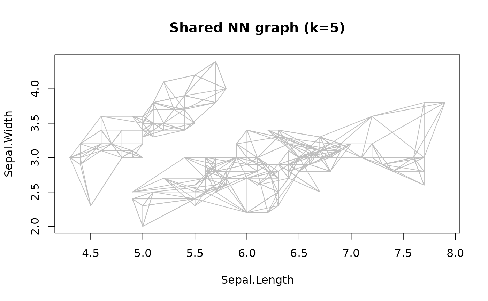
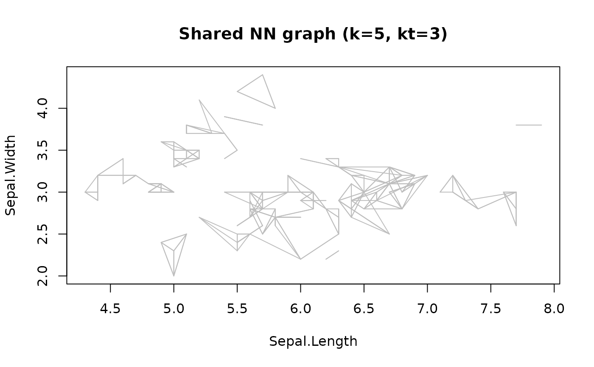

Calculates the number of shared nearest neighbors and creates a shared nearest neighbors graph.
Arguments
- x
- k
number of neighbors to consider to calculate the shared nearest neighbors.
- kt
minimum threshold on the number of shared nearest neighbors to build the shared nearest neighbor graph. Edges are only preserved if
ktor more neighbors are shared.- jp
In regular sNN graphs, two points that are not neighbors can have shared neighbors. Javis and Patrick (1973) requires the two points to be neighbors, otherwise the count is zeroed out.
TRUEuses this behavior.- sort
sort by the number of shared nearest neighbors? Note that this is expensive and
sort = FALSEis much faster. sNN objects can be sorted usingsort().- search
nearest neighbor search strategy (one of
"kdtree","linear"or"dist").- bucketSize
max size of the kd-tree leafs.
- splitRule
rule to split the kd-tree. One of
"STD","MIDPT","FAIR","SL_MIDPT","SL_FAIR"or"SUGGEST"(SL stands for sliding)."SUGGEST"uses ANNs best guess.- approx
use approximate nearest neighbors. All NN up to a distance of a factor of
(1 + approx) epsmay be used. Some actual NN may be omitted leading to spurious clusters and noise points. However, the algorithm will enjoy a significant speedup.- decreasing
logical; sort in decreasing order?
- ...
additional parameters are passed on.
Value
An object of class sNN (subclass of kNN and NN) containing a list
with the following components:
- id
a matrix with ids.
- dist
a matrix with the distances.
- shared
a matrix with the number of shared nearest neighbors.
- k
number of
kused.- metric
the used distance metric.
Details
The number of shared nearest neighbors of two points p and q is the
intersection of the kNN neighborhood of two points.
Note: that each point is considered to be part
of its own kNN neighborhood.
The range for the shared nearest neighbors is
\([0, k]\). The result is a n-by-k matrix called shared.
Each row is a point and the columns are the point's k nearest neighbors.
The value is the count of the shared neighbors.
The shared nearest neighbor graph connects a point with all its nearest neighbors
if they have at least one shared neighbor. The number of shared neighbors can be used
as an edge weight.
Javis and Patrick (1973) use a slightly
modified (see parameter jp) shared nearest neighbor graph for
clustering.
References
R. A. Jarvis and E. A. Patrick. 1973. Clustering Using a Similarity Measure Based on Shared Near Neighbors. IEEE Trans. Comput. 22, 11 (November 1973), 1025-1034. doi:10.1109/T-C.1973.223640
Examples
data(iris)
x <- iris[, -5]
# finding kNN and add the number of shared nearest neighbors.
k <- 5
nn <- sNN(x, k = k)
nn
#> shared-nearest neighbors for 150 objects (k=5, kt=NULL).
#> Available fields: dist, id, k, sort, metric, shared, sort_shared
# shared nearest neighbor distribution
table(as.vector(nn$shared))
#>
#> 0 1 2 3 4 5
#> 21 108 180 220 179 42
# explore number of shared points for the k-neighborhood of point 10
i <- 10
nn$shared[i,]
#> [1] 5 4 4 4 3
plot(nn, x)

# apply a threshold to create a sNN graph with edges
# if more than 3 neighbors are shared.
nn_3 <- sNN(nn, kt = 3)
plot(nn_3, x)

# get an adjacency list for the shared nearest neighbor graph
adjacencylist(nn_3)
#> [[1]]
#> 1 2 3 4
#> 18 28 29 40
#>
#> [[2]]
#> 1 2 3 4 5
#> 10 13 26 35 46
#>
#> [[3]]
#> 1 2
#> 4 48
#>
#> [[4]]
#> 1 2 3
#> 3 30 48
#>
#> [[5]]
#> 1 2 3
#> 38 41 18
#>
#> [[6]]
#> 1
#> 19
#>
#> [[7]]
#> 1 2
#> 48 43
#>
#> [[8]]
#> 1 2 3
#> 27 40 50
#>
#> [[9]]
#> 1 2 3
#> 39 14 43
#>
#> [[10]]
#> 1 2 3 4 5
#> 26 2 13 35 31
#>
#> [[11]]
#> 1 2 3
#> 49 37 47
#>
#> [[12]]
#> 1
#> 25
#>
#> [[13]]
#> 1 2 3 4
#> 2 10 35 46
#>
#> [[14]]
#> 1 2 3
#> 9 39 43
#>
#> [[15]]
#> 1 2
#> 16 34
#>
#> [[16]]
#> 1 2
#> 15 34
#>
#> [[17]]
#> 1
#> 6
#>
#> [[18]]
#> 1 2 3 4
#> 1 5 29 41
#>
#> [[19]]
#> 1 2
#> 6 17
#>
#> [[20]]
#> 1 2 3
#> 22 47 49
#>
#> [[21]]
#> 1
#> 32
#>
#> [[22]]
#> 1 2 3
#> 20 47 49
#>
#> [[23]]
#> named integer(0)
#>
#> [[24]]
#> 1
#> 27
#>
#> [[25]]
#> 1
#> 12
#>
#> [[26]]
#> 1 2 3 4 5
#> 10 2 13 35 31
#>
#> [[27]]
#> 1 2 3
#> 24 8 44
#>
#> [[28]]
#> 1 2 3 4
#> 1 29 18 40
#>
#> [[29]]
#> 1 2 3 4 5
#> 1 28 40 18 50
#>
#> [[30]]
#> 1 2
#> 4 31
#>
#> [[31]]
#> 1 2 3 4
#> 10 26 30 35
#>
#> [[32]]
#> 1 2
#> 21 37
#>
#> [[33]]
#> 1 2
#> 11 49
#>
#> [[34]]
#> 1 2
#> 16 15
#>
#> [[35]]
#> 1 2 3 4 5
#> 2 10 26 31 46
#>
#> [[36]]
#> named integer(0)
#>
#> [[37]]
#> 1 2
#> 11 32
#>
#> [[38]]
#> 1 2 3
#> 5 41 18
#>
#> [[39]]
#> 1 2 3
#> 9 14 43
#>
#> [[40]]
#> 1 2 3 4 5
#> 29 50 1 8 28
#>
#> [[41]]
#> 1 2 3
#> 5 8 18
#>
#> [[42]]
#> named integer(0)
#>
#> [[43]]
#> 1 2 3 4
#> 48 3 7 39
#>
#> [[44]]
#> 1
#> 27
#>
#> [[45]]
#> named integer(0)
#>
#> [[46]]
#> 1 2 3
#> 13 2 35
#>
#> [[47]]
#> 1 2 3
#> 20 22 49
#>
#> [[48]]
#> 1 2 3 4
#> 7 43 3 4
#>
#> [[49]]
#> 1 2 3 4
#> 11 47 20 22
#>
#> [[50]]
#> 1 2 3
#> 40 8 29
#>
#> [[51]]
#> 1 2 3 4
#> 87 53 59 77
#>
#> [[52]]
#> 1 2
#> 57 66
#>
#> [[53]]
#> 1 2 3 4
#> 51 77 87 78
#>
#> [[54]]
#> 1 2 3 4
#> 81 70 82 90
#>
#> [[55]]
#> 1 2 3 4
#> 59 75 76 77
#>
#> [[56]]
#> 1 2
#> 67 91
#>
#> [[57]]
#> 1 2
#> 52 86
#>
#> [[58]]
#> 1 2 3
#> 61 94 99
#>
#> [[59]]
#> 1 2 3 4 5
#> 55 66 76 77 87
#>
#> [[60]]
#> 1 2 3
#> 90 54 81
#>
#> [[61]]
#> 1 2 3
#> 58 94 99
#>
#> [[62]]
#> 1 2 3 4
#> 89 96 97 100
#>
#> [[63]]
#> 1 2 3 4
#> 68 70 83 93
#>
#> [[64]]
#> 1 2 3
#> 74 92 79
#>
#> [[65]]
#> 1
#> 80
#>
#> [[66]]
#> 1 2 3 4
#> 76 52 59 75
#>
#> [[67]]
#> 1 2
#> 56 85
#>
#> [[68]]
#> 1 2
#> 93 83
#>
#> [[69]]
#> 1
#> 88
#>
#> [[70]]
#> 1 2 3
#> 81 82 90
#>
#> [[71]]
#> 1 2 3
#> 128 139 150
#>
#> [[72]]
#> 1
#> 83
#>
#> [[73]]
#> 1 2 3 4
#> 120 124 134 147
#>
#> [[74]]
#> 1 2 3
#> 64 79 92
#>
#> [[75]]
#> 1 2 3 4
#> 76 55 59 66
#>
#> [[76]]
#> 1 2 3 4
#> 66 75 55 59
#>
#> [[77]]
#> 1 2 3 4 5
#> 53 55 59 78 87
#>
#> [[78]]
#> 1 2
#> 53 77
#>
#> [[79]]
#> 1 2 3
#> 64 92 98
#>
#> [[80]]
#> 1 2 3
#> 65 70 82
#>
#> [[81]]
#> 1 2 3 4
#> 54 70 82 90
#>
#> [[82]]
#> 1 2 3 4 5
#> 54 81 70 80 90
#>
#> [[83]]
#> 1 2 3
#> 68 93 72
#>
#> [[84]]
#> 1 2
#> 102 143
#>
#> [[85]]
#> 1 2
#> 56 67
#>
#> [[86]]
#> 1
#> 57
#>
#> [[87]]
#> 1 2 3 4
#> 51 53 59 77
#>
#> [[88]]
#> 1
#> 69
#>
#> [[89]]
#> 1 2 3 4 5
#> 96 97 62 100 95
#>
#> [[90]]
#> 1 2 3
#> 54 81 70
#>
#> [[91]]
#> 1 2
#> 95 56
#>
#> [[92]]
#> 1 2 3
#> 64 74 79
#>
#> [[93]]
#> 1 2
#> 68 83
#>
#> [[94]]
#> 1 2 3
#> 58 61 99
#>
#> [[95]]
#> 1 2 3 4
#> 91 89 97 100
#>
#> [[96]]
#> 1 2 3 4 5
#> 89 97 62 100 95
#>
#> [[97]]
#> 1 2 3 4 5
#> 89 96 62 100 95
#>
#> [[98]]
#> 1
#> 79
#>
#> [[99]]
#> 1 2 3
#> 58 61 94
#>
#> [[100]]
#> 1 2 3 4
#> 89 96 97 95
#>
#> [[101]]
#> 1 2 3 4
#> 137 141 144 145
#>
#> [[102]]
#> 1 2 3 4
#> 143 114 122 84
#>
#> [[103]]
#> 1
#> 126
#>
#> [[104]]
#> 1 2 3 4 5
#> 117 129 138 112 133
#>
#> [[105]]
#> 1 2
#> 125 144
#>
#> [[106]]
#> 1 2 3
#> 119 123 136
#>
#> [[107]]
#> named integer(0)
#>
#> [[108]]
#> 1 2 3
#> 126 130 131
#>
#> [[109]]
#> 1 2 3 4 5
#> 104 129 112 117 133
#>
#> [[110]]
#> named integer(0)
#>
#> [[111]]
#> 1 2
#> 116 148
#>
#> [[112]]
#> 1 2 3
#> 117 104 129
#>
#> [[113]]
#> 1 2 3
#> 140 121 125
#>
#> [[114]]
#> 1 2 3 4
#> 102 115 122 143
#>
#> [[115]]
#> 1 2 3 4
#> 122 102 114 143
#>
#> [[116]]
#> 1 2 3
#> 149 111 148
#>
#> [[117]]
#> 1 2 3 4
#> 138 104 112 129
#>
#> [[118]]
#> 1
#> 132
#>
#> [[119]]
#> 1 2 3
#> 106 123 136
#>
#> [[120]]
#> 1
#> 73
#>
#> [[121]]
#> 1 2 3 4 5
#> 125 141 144 145 113
#>
#> [[122]]
#> 1 2 3 4
#> 115 102 114 143
#>
#> [[123]]
#> 1 2 3
#> 106 119 136
#>
#> [[124]]
#> 1 2 3 4
#> 134 73 127 147
#>
#> [[125]]
#> 1 2 3 4 5
#> 121 141 144 105 113
#>
#> [[126]]
#> 1 2 3 4
#> 108 130 131 103
#>
#> [[127]]
#> 1 2 3 4
#> 124 128 139 147
#>
#> [[128]]
#> 1 2 3 4
#> 139 71 127 150
#>
#> [[129]]
#> 1 2 3 4
#> 104 133 112 117
#>
#> [[130]]
#> 1 2 3 4
#> 108 126 131 103
#>
#> [[131]]
#> 1 2 3 4
#> 108 126 130 136
#>
#> [[132]]
#> 1
#> 118
#>
#> [[133]]
#> 1 2
#> 129 104
#>
#> [[134]]
#> 1 2 3
#> 124 73 127
#>
#> [[135]]
#> named integer(0)
#>
#> [[136]]
#> 1 2 3 4
#> 106 123 108 131
#>
#> [[137]]
#> 1 2
#> 101 149
#>
#> [[138]]
#> 1 2 3 4
#> 117 104 112 129
#>
#> [[139]]
#> 1 2 3 4
#> 128 71 127 150
#>
#> [[140]]
#> 1 2 3
#> 113 142 146
#>
#> [[141]]
#> 1 2 3
#> 121 144 145
#>
#> [[142]]
#> 1 2
#> 146 140
#>
#> [[143]]
#> 1 2 3 4
#> 102 114 122 84
#>
#> [[144]]
#> 1 2 3 4 5
#> 121 125 141 145 105
#>
#> [[145]]
#> 1 2 3 4
#> 121 144 125 141
#>
#> [[146]]
#> 1 2
#> 142 140
#>
#> [[147]]
#> 1 2 3
#> 73 124 127
#>
#> [[148]]
#> 1 2
#> 111 116
#>
#> [[149]]
#> 1 2
#> 116 137
#>
#> [[150]]
#> 1 2 3
#> 71 128 139
#>